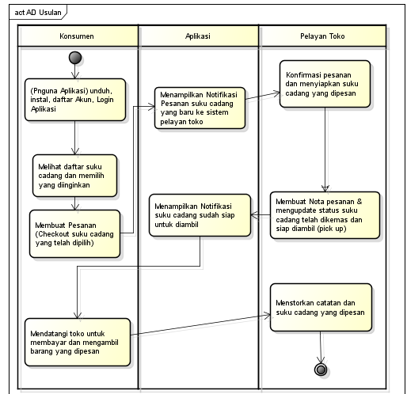

Nama : Sindi
Nim : 1811500070
Hasil saduran saya di pertemuan 3
Penjelasan cara kehadiran dan Tugas wajib mengunakan file index.html.
Kebanyakan Aktivity Diagram digunakan untuk menggambarkan proses bisnis bukan urut-urutan detail form aplikasi, yang mana detail-detail itu digambarkan pada Sequence Diagram.
Analisis sistem usulan itu harus memberikan manfaat kepada kedua belah pihak, manfaatnya seperti memangkas proses bisnis agar lebih mudah.
Analisis Sistem Usulan dan Solusi lebih efektif dan efisien dalam segala hal seperti waktu, biaya, tenaga, pelayanan jika dibandingkan dengan sistem berjalan.
Hasil file project astah download
